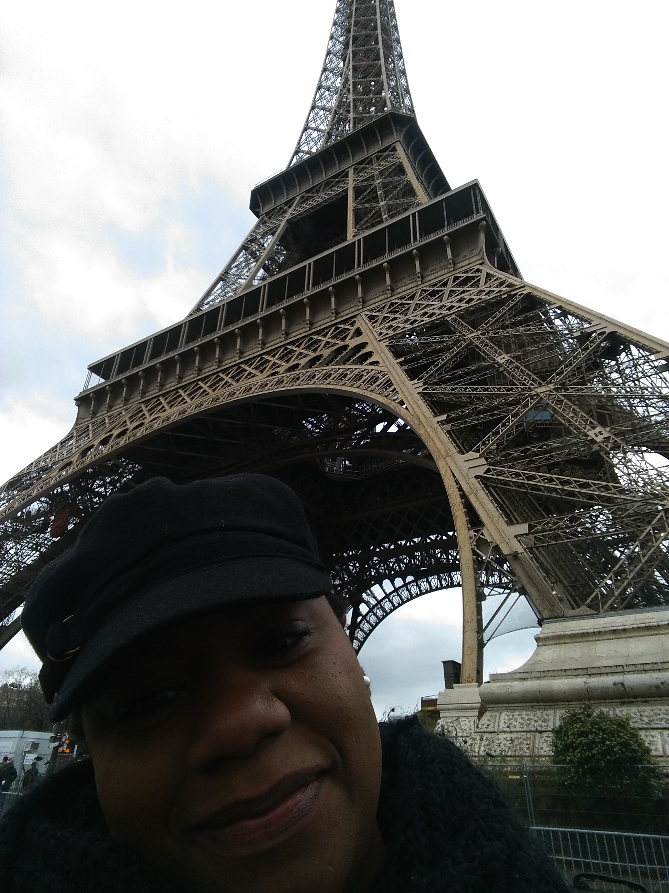

About Me

With years of experience in graphic and print design, front end web development, python application development and project management, I have the skills and expertise to handle complicated and diverse projects.
It all started in 2007 when I came across an article on how to build a computer. Having no other hobbies and just the right amount of time and money, I decided to build one. Upon my successful implementation of Linux on my newly built computer, I had to learn the command line in order to make it work. I found it frustratingly fanscinating and thus began my journey into development. From there I began reading open source magazines, I took classes in database administration and interned for the company I worked for as a Level 1 help desk.
My journey has taken twists and turns and for some time I didn't do any coding or scripting. Years after I'd built my first computer and stumbled upon an article on learning python. It looked fun, so I started to learn it. From there I learned Django. I moved on to html, css, jquery and javascript. My ultimate goal is to become a full stack developer.